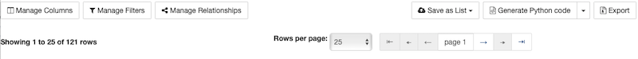
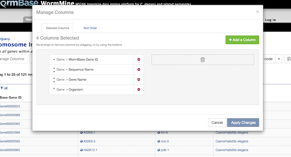

Table manipulation
Results table also have a set of buttons, on top of the table, that provide some functionality on the results and also on exporting, saving and displaying contents. Some of these buttons open a dialog on top of the column with actions that can be performed and need to be dismissed to return to the result table.


- Manage Columns - allows the user to select column order, add and remove columns, add new columns that are not part
of the query/template and sort the order of all columns in bulk.
- Manage filters - allows for multiple filter management at once, including constraints and filter logic. The dialog allows to include filters from fields and items that are not part of the query/template.
- Manage relationships - this works on excluding classes from the final result set, or making connections that are displayed in the results table to be optional on the screen, making related classes to appear nested (by using this feature a Undo button will the toggled on)
- Save as List - this button creates a list that can be saved by the user so it can be applied later on a different query or to be kept between releases, allowing for differences to be examined. One or multiple columns and rows can be selected, and a name has to be provided (to take full advantage, create an account and login first)
- Generate Code - query can be saved in multiple types of programming languages that take advantage of WormMine's API. Python, Perl, Java, Ruby, Javascript and XML are available
- Export - saves a text file with the items in the table. Columns and rows can be selected, headers can be added, at the same time as compression (useful for really long tables). Possibility of sending the results to a Galaxy or Genomespace service is available.
Table display, like number of rows per page, current page, last and first pages can be controlled by the respective buttons on top of the table.